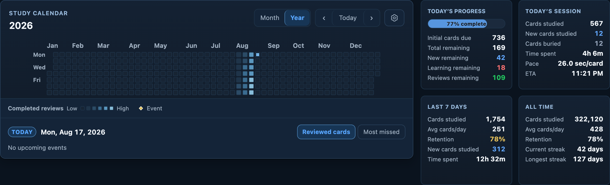
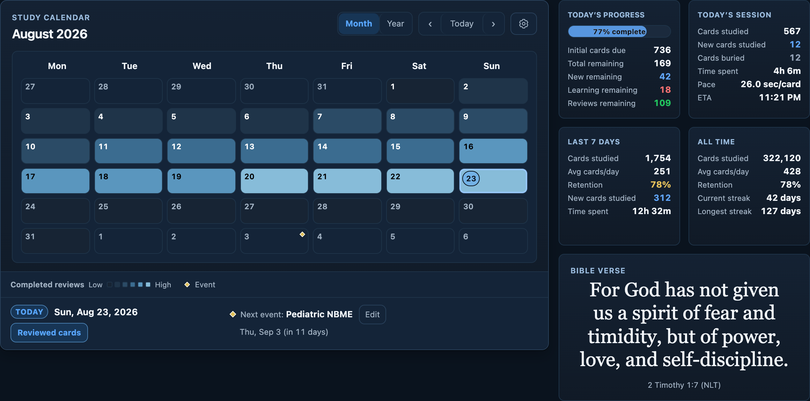
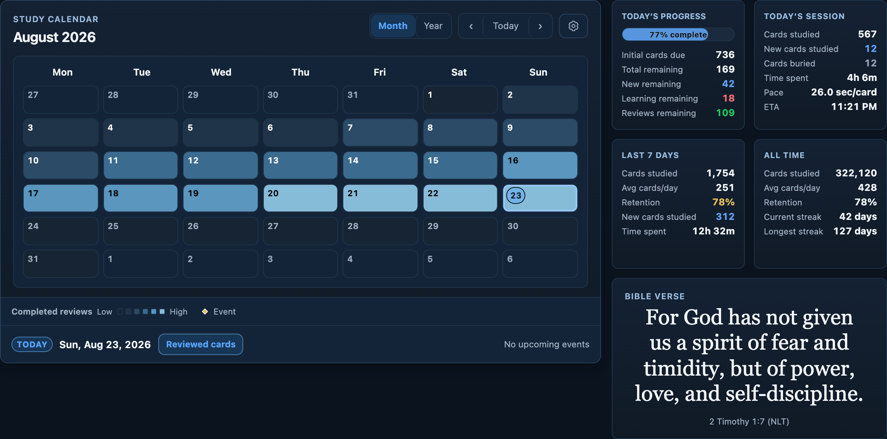
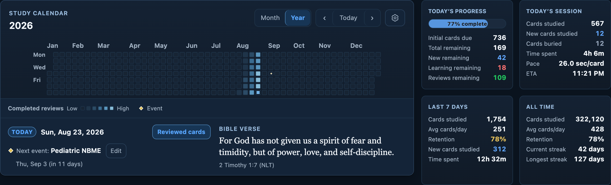
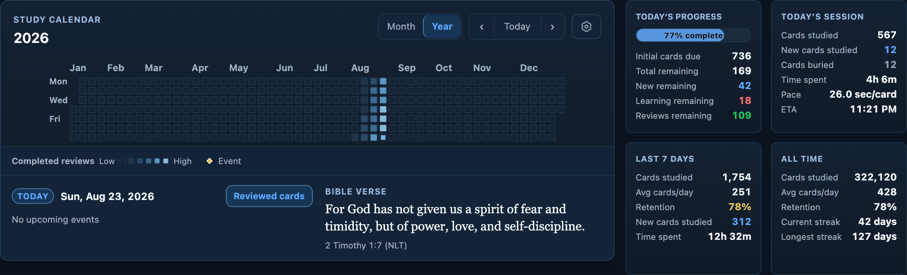
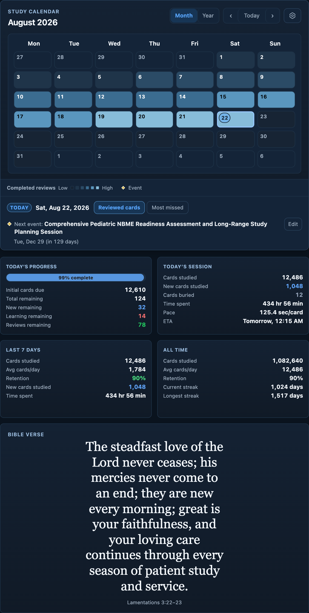
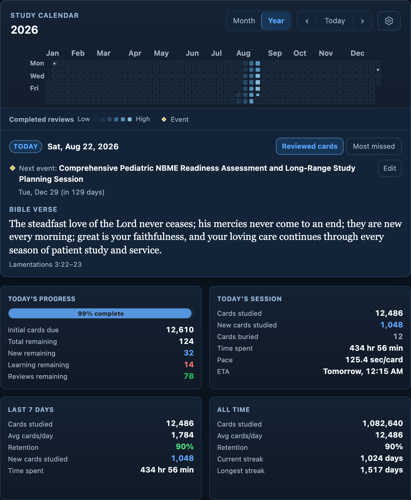
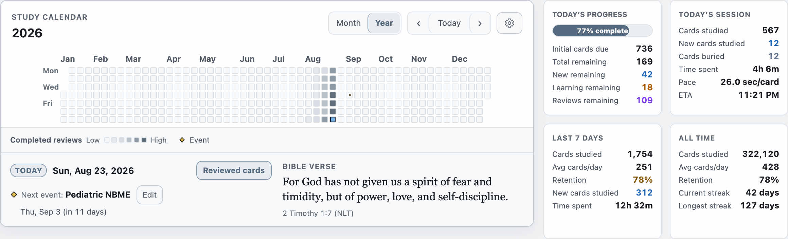
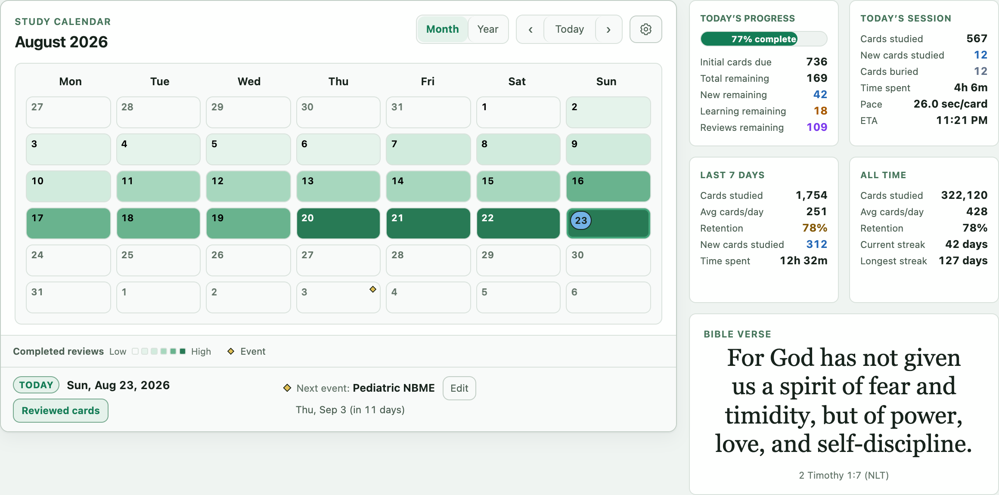
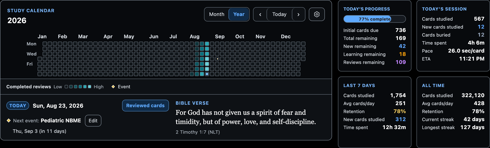

Month and Year footer review
Production renderer in macOS Chrome at 100% scale. Month keeps its standalone verse; Year embeds the same verse inside the footer. Month: 75 px with an event, 48 px when empty. Verification details
year no verse · 1280 CSS px viewport
month event · 1280 CSS px viewport
month empty · 1280 CSS px viewport
year event · 1280 CSS px viewport
year empty · 1280 CSS px viewport
month narrow · 720 CSS px viewport
year narrow · 720 CSS px viewport
graphite year light · 1280 CSS px viewport
emerald month light · 1280 CSS px viewport
high contrast year dark · 1280 CSS px viewport